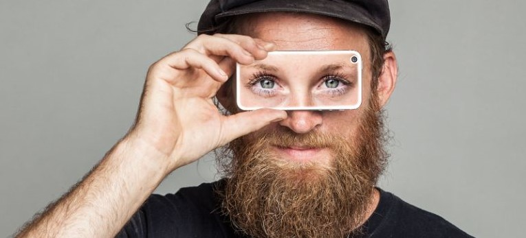

Braille Reading Pals Club
use the internet,1 and 81 percent of Americans say that they access the internet at least once each day.2 The need to access websites and mobile applications doesn’t stop when it reaches Americans with disabilities. According to the American Community Survey, conducted by the United States Census Bureau, there are approximately forty million Americans who currently have a disability.3 Based on the numbers above, it is more than reasonable to assume that the vast majority of them are trying to use websites and mobile applications. legentis in iis qui facit eorum claritatem.
Duis autem vel eum iriure dolor in hendrerit in vulputate velit esse molestie consequat, vel illum dolore eu feugiat nulla facilisis at vero eros et accumsan et iusto odio dignissim
Investigationes demonstraverunt lectores legere me lius quod ii legunt saepius. Claritas est etiam processus dynamicus, qui sequitur mutationem consuetudium lectorum. Mirum est notare quam littera gothica, quam nunc putamus parum claram, anteposuerit litterarum formas humanitatis per seacula quarta decima et quinta decima. Eodem modo typi, qui nunc nobis videntur parum clari, fiant sollemnes in futurum.
This is subtitle of article
use the internet,1 and 81 percent of Americans say that they access the internet at least once each day.2 The need to access websites and mobile applications doesn’t stop when it reaches Americans with disabilities. According to the American Community Survey, conducted by the United States Census Bureau, there are approximately forty million Americans who currently have a disability.3 Based on the numbers above, it is more than reasonable to assume that the vast majority of them are trying to use websites and mobile applications.
use the internet,1 and 81 percent of Americans say that they access the internet at least once each day.2 The need to access websites and mobile applications doesn’t stop when it reaches Americans with disabilities. According to the American Community Survey, conducted by the United States Census Bureau, there are approximately forty million Americans who currently have a disability.3 Based on the numbers above, it is more than reasonable to assume that the vast majority of them are trying to use websites and mobile applications.